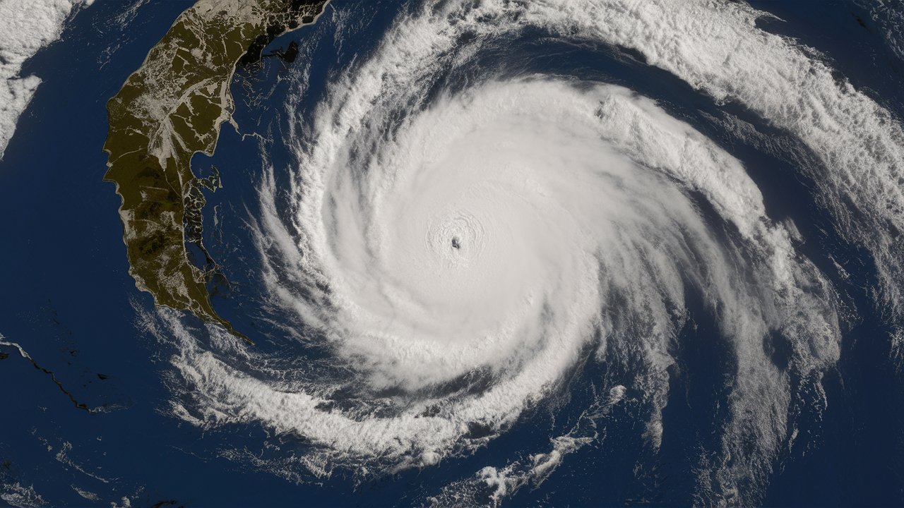

Natural Disaster With Environmental Impact
Natural disasters with environmental impact are catastrophic events caused by natural forces that result in significant damage to the environment. These disasters can lead to the destruction of ecosystems, loss of biodiversity, and long-term ecological changes.
Types of Natural Disasters with Environmental Impact
Floods
Impact
Erosion, water contamination, and destruction of habitats.
Example
The 2011 Tōhoku Earthquake and Tsunami in Japan, which triggered the Fukushima nuclear disaster
Droughts
Impact
Soil degradation, loss of crops, and water scarcity.
Example
The Dust Bowl in the 1930s in the U.S., caused by severe drought and poor farming practices
Wildfires
Impact
Destruction of forests, release of carbon dioxide, and loss of wildlife.
Example
The 2017 California Wildfires, which destroyed habitats and released pollutants
Hurricanes and Typhoons
Impact
Coastal erosion, flooding, and destruction of marine ecosystems.
Example
Hurricane Katrina in 2005, which caused extensive environmental damage along the Gulf Coast
Earthquakes
Impact
Landslides, soil liquefaction, and changes in landforms.
Example

The 2008 Sichuan Earthquake in China, which caused massive landslides and habitat destruction
Impacts of Natural Disasters
Ecosystems
Disruption of ecological balance, loss of habitats, and decline in species populations.
Human Health
Increased risk of diseases, injuries, and long-term health issues due to environmental changes.
Economy
High costs for disaster response, rebuilding, and economic losses from disrupted activities.
Solutions and Mitigation
Preparedness
Developing early warning systems and disaster response plans.
Sustainable Practice
Promoting sustainable land use, agriculture, and infrastructure resilience.
Restoration:
Implementing habitat restoration projects and reforestation efforts.
Education
Raising awareness about the importance of environmental conservation and disaster preparedness.